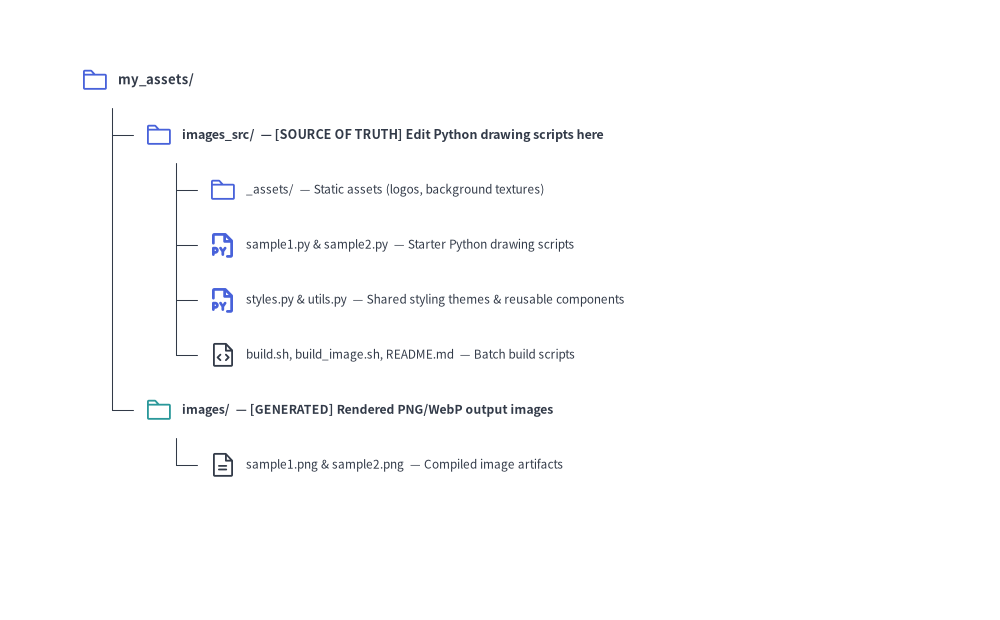
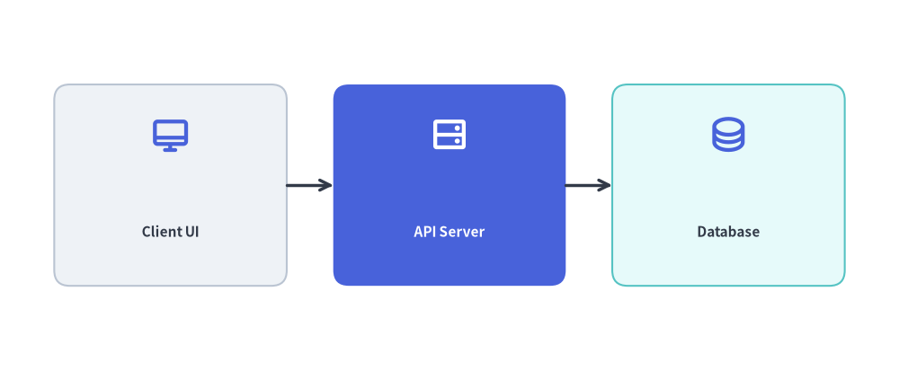

Images Project Guide (drawlib init images)
The images starter template (CLI alias: image) is designed for generating standalone illustration assets, presentation diagrams, article hero banners, and social preview cards directly from batch Python scripts.
Each project separates editable Python source scripts (images_src/) from generated image artifacts (images/):

Source Code
from drawlib.canvas import save, setup
from drawlib.icons import phosphor
from drawlib.smartarts import TreeNode
from drawlib.styles import Styles
setup(width=98, height=62)
TreeNode.register_drawing_item(
name="folder",
location="before",
padding_width=4.2,
function=phosphor.folder,
style=Styles.PrimaryFlat,
args={"width": 3.2},
)
TreeNode.register_drawing_item(
name="folder_out",
location="before",
padding_width=4.2,
function=phosphor.folder,
style=Styles.Secondary,
args={"width": 3.2},
)
TreeNode.register_drawing_item(
name="py",
location="before",
padding_width=4.2,
function=phosphor.file_py,
style=Styles.PrimaryBold,
args={"width": 3.2},
)
TreeNode.register_drawing_item(
name="code",
location="before",
padding_width=4.2,
function=phosphor.file_code,
style=Styles.Dark,
args={"width": 3.2},
)
TreeNode.register_drawing_item(
name="img",
location="before",
padding_width=4.2,
function=phosphor.file_text,
style=Styles.Dark,
args={"width": 3.2},
)
root = TreeNode(
"my_assets/",
text_style=Styles.DarkBold.patch(text_size=11.5),
line_style=Styles.DarkThin,
line_horizontal_margin=3.4,
line_horizontal_length=3.4,
line_vertical_margin=5.6,
).set_drawing_item("folder")
src = root.add(
"images_src/ — [SOURCE OF TRUTH] Edit Python scripts here",
text_style=Styles.DarkBold.patch(text_size=11.0),
).set_drawing_item("folder")
src.add(
"_assets/ — Static assets (logos, background textures)",
text_style=Styles.Dark.patch(text_size=10.5),
).set_drawing_item("folder")
src.add(
"sample1.py & sample2.py — Starter Python drawing scripts",
text_style=Styles.Dark.patch(text_size=10.5),
).set_drawing_item("py")
src.add(
"styles.py & utils.py — Shared styling themes & helpers",
text_style=Styles.Dark.patch(text_size=10.5),
).set_drawing_item("py")
src.add(
"build.sh, build_image.sh, README.md — Batch build scripts",
text_style=Styles.Dark.patch(text_size=10.5),
).set_drawing_item("code")
out = root.add(
"images/ — [GENERATED] Rendered PNG/WebP output images",
text_style=Styles.DarkBold.patch(text_size=10.8),
).set_drawing_item("folder_out")
out.add(
"sample1.png & sample2.png — Compiled image artifacts",
text_style=Styles.Dark.patch(text_size=10.5),
).set_drawing_item("img")
root.draw(xy=(6, 54))
save()
1. Project Initialization
Scaffold a new images project using drawlib init:
# Scaffold standard images project in current directory (creates 'images_src/'):
drawlib init images
# Or with custom target name, theme, and language (creates 'my_assets_src/'):
drawlib init images my_assets -s google -l en
2. Directory Layout & Anatomy
Key Rules:
- Source of Truth: Always author drawing scripts in
images_src/. After scaffolding, replace or remove the startersample1.pyandsample2.pyfiles so only your desired diagrams are built. - Never Edit
images/: Theimages/folder is an output artifact directory overwritten during builds.
3. Writing Drawing Scripts
In an images project, each .py file inside images_src/ is an independent drawing script. Call save() at the end of the script to output the image:
# images_src/architecture_overview.py
from drawlib.canvas import save, setup
from drawlib.icons import phosphor
from drawlib.lines import line
from drawlib.shapes import rectangle
from drawlib.styles import Styles
from drawlib.text import text
setup(width=116, height=48)
# Draw components (50%+ neutral baseline + 1 primary focal point)
rectangle((22, 24), width=30, height=26, style=Styles.Neutral.patch(shape_r=2.0))
phosphor.desktop((22, 30.5), width=5.2, style=Styles.PrimaryBold)
text((22, 18.0), "Client UI", style=Styles.DarkBold.patch(text_size=11.0))
rectangle((58, 24), width=30, height=26, style=Styles.PrimaryFlat.patch(shape_r=2.0))
phosphor.hard_drives((58, 30.5), width=5.2, style=Styles.WhiteBold)
text((58, 18.0), "API Server", style=Styles.WhiteBold.patch(text_size=11.0))
rectangle((94, 24), width=30, height=26, style=Styles.SecondaryNeutral.patch(shape_r=2.0))
phosphor.database((94, 30.5), width=5.2, style=Styles.PrimaryBold)
text((94, 18.0), "Database", style=Styles.DarkBold.patch(text_size=11.0))
line((37, 24), (43, 24), arrow_head="->", style=Styles.DarkBold)
line((73, 24), (79, 24), arrow_head="->", style=Styles.DarkBold)
# Save image (defaults to <script_stem>.png or save("architecture_overview.png") in scripts)
save()

How save() Interacts with drawlib build image -o images/:
- Automatic Output Redirection: When executed via
drawlib build image images_src/ -o images/, relative paths passed tosave("architecture_overview.png")(orsave()with no filename, which defaults to<script_stem>.png) are automatically written inside the-o images/directory, preserving any nested subdirectory hierarchy underimages_src/. - Pre-Execution AST Duplicate Collision Check: Before running any scripts in a batch, Drawlib parses the Python AST of all target
.pyfiles to inspect theirsave(...)targets. If two scripts would write to the exact same output file path, the build aborts immediately before modifying disk state.
4. Building Images
Automated Build (./build_image.sh or ./build.sh)
Execute the provided build script:
./images_src/build.sh
Direct CLI Command
Alternatively, invoke the builder directly:
drawlib build image images_src/ -o images/ -s images_src/styles.py -u images_src/utils.py
Useful Build Flags:
--grid(-g): Automatically generates companion*_grid.pngimages overlaid with coordinate grid lines for visual debugging.-f webp: Overrides output format across all scripts to modern WebP.--no-cache: Forces a clean re-render of all images, bypassing the SQLite hash cache (.drawlib/cache.db).